| Name | Description |
|---|---|
| A wrong Modelica_StateGraph2 that has an infinite loop (translates with an error) | |
| Several loops that have wrongly only one delayed transition in one of the loops, but not in all | |
| A wrong Modelica_StateGraph2 with infinite looping of a composite step (translates with an error) | |
| A wrong Modelica_StateGraph2 to demonstrate parallel execution paths with infinite looping ((translates with an error)) | |
| An initial step is missing | |
| Autonomous parallel with suspend/resume (either the parallel should have initialStep= true or an initial step is missing in the resume branch) | |
| A wrong Modelica_StateGraph2 that has two initial steps (gives an error during initialization) | |
| Wrong Modelica_StateGraph2 with two initial steps | |
| Wrong Modelica_StateGraph2 that branches out of the parallel step (gives error during initialization) | |
| Wrong Modelica_StateGraph2 where not all parallel paths are synchronized (gives translation error) | |
| Wrong Modelica_StateGraph2 where not all parallel paths are synchronized (gives translation error) | |
| Wrong Modelica_StateGraph2 where not all parallel paths are synchronized and a wrong initial step is added to compensate for this (gives an error during initialization) | |
| Wrong Modelica_StateGraph2 where an initial step is placed in a parallel (gives translation error) | |
| Two steps are wrongly connected to the same outPort of a transition | |
| Two steps are wrongly connected to one element of an entry port |
 Modelica_StateGraph2.Examples.WrongStateGraphs.SimpleInfiniteLoop
Modelica_StateGraph2.Examples.WrongStateGraphs.SimpleInfiniteLoop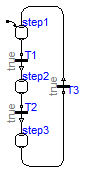
model SimpleInfiniteLoop "A wrong Modelica_StateGraph2 that has an infinite loop (translates with an error)" extends Modelica.Icons.Example;Modelica_StateGraph2.Step step1( initialStep=true, nOut=1, nIn=1); Modelica_StateGraph2.Transition T1; Modelica_StateGraph2.Step step2( nIn=1, nOut=1); Modelica_StateGraph2.Transition T2; Modelica_StateGraph2.Step step3( nIn=1, nOut=1); Modelica_StateGraph2.Transition T3; equationconnect(step1.outPort[1], T1.inPort); connect(T1.outPort, step2.inPort[1]); connect(step2.outPort[1], T2.inPort); connect(T2.outPort, step3.inPort[1]); connect(step3.outPort[1], T3.inPort); connect(T3.outPort, step1.inPort[1]); end SimpleInfiniteLoop;
Modelica_StateGraph2.Examples.WrongStateGraphs.SeveralInfiniteLoops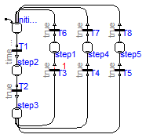
model SeveralInfiniteLoops "Several loops that have wrongly only one delayed transition in one of the loops, but not in all" extends Modelica.Icons.Example;Modelica_StateGraph2.Step initialStep( nIn=3, nOut=1, initialStep=true); Modelica_StateGraph2.Transition T1( condition=time > 2); Modelica_StateGraph2.Step step2( nIn=1, nOut=1); Modelica_StateGraph2.Transition T2( waitTime=1, delayedTransition=false); Modelica_StateGraph2.Step step3( nIn=1, nOut=3); Modelica_StateGraph2.Transition T3( delayedTransition=true, waitTime=1); Modelica_StateGraph2.Transition T4( waitTime=1.5, delayedTransition=false); Modelica_StateGraph2.Transition T5( waitTime=1.7, delayedTransition=false); Modelica_StateGraph2.Step step1( nIn=1, nOut=1); Modelica_StateGraph2.Step step4( nIn=1, nOut=1); Modelica_StateGraph2.Step step5( nIn=1, nOut=1); Modelica_StateGraph2.Transition T6( waitTime=1, delayedTransition=false); Modelica_StateGraph2.Transition T7( waitTime=1, delayedTransition=false); Modelica_StateGraph2.Transition T8( waitTime=1, delayedTransition=false); equationconnect(initialStep.outPort[1],T1. inPort); connect(T1.outPort,step2. inPort[1]); connect(step2.outPort[1],T2. inPort); connect(T2.outPort,step3. inPort[1]); connect(step3.outPort[1],T3. inPort); connect(step3.outPort[2], T4.inPort); connect(step3.outPort[3], T5.inPort); connect(step1.inPort[1], T3.outPort); connect(step4.inPort[1], T4.outPort); connect(step5.inPort[1], T5.outPort); connect(T6.inPort, step1.outPort[1]); connect(T7.inPort, step4.outPort[1]); connect(T8.inPort, step5.outPort[1]); connect(T6.outPort, initialStep.inPort[1]); connect(T7.outPort, initialStep.inPort[2]); connect(T8.outPort, initialStep.inPort[3]); end SeveralInfiniteLoops;
Modelica_StateGraph2.Examples.WrongStateGraphs.InfiniteLoop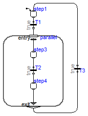
model InfiniteLoop "A wrong Modelica_StateGraph2 with infinite looping of a composite step (translates with an error)" extends Modelica.Icons.Example;Modelica_StateGraph2.Step step1( nOut=1, initialStep=true, nIn=1); Parallel parallel( use_inPort=true, use_outPort=true, nIn=1, nEntry=1, nOut=1, nExit=1); Modelica_StateGraph2.Transition T1( waitTime=1, delayedTransition= false); Modelica_StateGraph2.Step step3( nOut=1, nIn=1); Modelica_StateGraph2.Transition T2( waitTime=1, delayedTransition= false); Modelica_StateGraph2.Step step4( nOut=1, nIn=1); Modelica_StateGraph2.Transition T3( waitTime=1, use_conditionPort=false, delayedTransition=false); equationconnect(step1.outPort[1], T1.inPort); connect(T1.outPort, parallel.inPort[1]); connect(step3.outPort[1], T2.inPort); connect(parallel.entry[1], step3.inPort[1]); connect(T2.outPort, step4.inPort[1]); connect(parallel.outPort[1], T3.inPort); connect(T3.outPort, step1.inPort[1]); connect(step4.outPort[1], parallel.exit[1]); end InfiniteLoop;
Modelica_StateGraph2.Examples.WrongStateGraphs.ParallelWithInfiniteLoop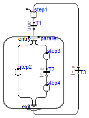
model ParallelWithInfiniteLoop "A wrong Modelica_StateGraph2 to demonstrate parallel execution paths with infinite looping ((translates with an error))" extends Modelica.Icons.Example;Modelica_StateGraph2.Step step1( nOut=1, initialStep=true, nIn=1); Parallel parallel( use_inPort=true, use_outPort=true, nIn=1, nEntry=2, nOut=1, nExit=2); Modelica_StateGraph2.Transition T1( waitTime=1, delayedTransition= false); Modelica_StateGraph2.Step step2( nIn=1, nOut=1); Modelica_StateGraph2.Step step3( nOut=1, nIn=1); Modelica_StateGraph2.Transition T2( waitTime=1, delayedTransition= false); Modelica_StateGraph2.Step step4( nOut=1, nIn=1); Modelica_StateGraph2.Transition T3( waitTime=1, use_conditionPort=false, delayedTransition=false); equationconnect(step1.outPort[1], T1.inPort); connect(T1.outPort, parallel.inPort[1]); connect(step3.outPort[1], T2.inPort); connect(parallel.entry[1], step2.inPort[1]); connect(parallel.entry[2], step3.inPort[1]); connect(T2.outPort, step4.inPort[1]); connect(parallel.outPort[1], T3.inPort); connect(T3.outPort, step1.inPort[1]); connect(step2.outPort[1], parallel.exit[1]); connect(step4.outPort[1], parallel.exit[2]); end ParallelWithInfiniteLoop;
Modelica_StateGraph2.Examples.WrongStateGraphs.NoInitialStep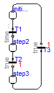
Extends from Modelica.Icons.Example (Icon for runnable examples).
model NoInitialStep "An initial step is missing" extends Modelica.Icons.Example;Modelica_StateGraph2.Step initialStep( nIn=1, nOut=1, initialStep=false); Modelica_StateGraph2.Transition T1( condition=time > 2); Modelica_StateGraph2.Step step2( nIn=1, nOut=1); Modelica_StateGraph2.Transition T2( delayedTransition=true, waitTime=1); Modelica_StateGraph2.Step step3( nIn=1, nOut=1); Modelica_StateGraph2.Transition T3( delayedTransition=true, waitTime=1); equationconnect(initialStep.outPort[1], T1.inPort); connect(T1.outPort, step2.inPort[1]); connect(step2.outPort[1], T2.inPort); connect(T2.outPort, step3.inPort[1]); connect(step3.outPort[1], T3.inPort); connect(T3.outPort, initialStep.inPort[1]); end NoInitialStep;
Modelica_StateGraph2.Examples.WrongStateGraphs.AutonomousWithSuspendAndNoInitialStep

model AutonomousWithSuspendAndNoInitialStep "Autonomous parallel with suspend/resume (either the parallel should have initialStep= true or an initial step is missing in the resume branch)" extends Modelica.Icons.Example;Parallel parallel( nIn=0, nEntry=1, nOut=0, use_suspend=true, nSuspend=1, nResume=1, nExit=2, use_outPort=false, use_inPort=false); Modelica_StateGraph2.Step step3( nOut=1, nIn=2); Modelica_StateGraph2.Transition T2( delayedTransition=true, waitTime=1); Modelica_StateGraph2.Step step4( nOut=1, nIn=1); Modelica_StateGraph2.Transition T4( condition=time > 2.5 and time <= 4); Modelica_StateGraph2.Step step5( nIn=1, nOut=1, initialStep=false); Modelica_StateGraph2.Transition T5( delayedTransition=true, waitTime=2); Modelica_StateGraph2.Transition T6( delayedTransition=true, waitTime=1); equationconnect(step3.outPort[1], T2.inPort); connect(parallel.entry[1], step3.inPort[1]); connect(T2.outPort, step4.inPort[1]); connect(step5.outPort[1], T5.inPort); connect(T4.outPort, step5.inPort[1]); connect(parallel.suspend[1], T4.inPort); connect(step4.outPort[1], T6.inPort); connect(T5.outPort, parallel.resume[1]); connect(T6.outPort, step3.inPort[2]); end AutonomousWithSuspendAndNoInitialStep;
Modelica_StateGraph2.Examples.WrongStateGraphs.TwoInitialSteps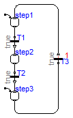
model TwoInitialSteps "A wrong Modelica_StateGraph2 that has two initial steps (gives an error during initialization)" extends Modelica.Icons.Example;Modelica_StateGraph2.Step step1( initialStep=true, nOut=1, nIn=1); Modelica_StateGraph2.Transition T1; Modelica_StateGraph2.Step step2( nIn=1, nOut=1); Modelica_StateGraph2.Transition T2; Modelica_StateGraph2.Step step3( nIn=1, nOut=1, initialStep=true); Modelica_StateGraph2.Transition T3( delayedTransition=true, waitTime=1); equationconnect(step1.outPort[1], T1.inPort); connect(T1.outPort, step2.inPort[1]); connect(step2.outPort[1], T2.inPort); connect(T2.outPort, step3.inPort[1]); connect(step3.outPort[1], T3.inPort); connect(T3.outPort, step1.inPort[1]); end TwoInitialSteps;
Modelica_StateGraph2.Examples.WrongStateGraphs.ParallelWithTwoInitialSteps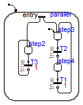
model ParallelWithTwoInitialSteps "Wrong Modelica_StateGraph2 with two initial steps" extends Modelica.Icons.Example;Parallel parallel( nIn=0, nEntry=2, nOut=0, use_inPort=false, use_outPort=false, initialStep=true); Modelica_StateGraph2.Step step2( nIn=2, nOut=1); Modelica_StateGraph2.Step step3( nOut=1, nIn=2, initialStep=true); Modelica_StateGraph2.Transition T2( waitTime=1, delayedTransition= false); Modelica_StateGraph2.Step step4( nOut=1, nIn=1); Modelica_StateGraph2.Transition T1( delayedTransition=true, waitTime=1); Modelica_StateGraph2.Transition T3( delayedTransition=true, waitTime=1); equationconnect(step3.outPort[1], T2.inPort); connect(parallel.entry[1], step2.inPort[1]); connect(parallel.entry[2], step3.inPort[1]); connect(T2.outPort, step4.inPort[1]); connect(step4.outPort[1], T1.inPort); connect(T1.outPort, step3.inPort[2]); connect(T3.outPort, step2.inPort[2]); connect(step2.outPort[1], T3.inPort); end ParallelWithTwoInitialSteps;
Modelica_StateGraph2.Examples.WrongStateGraphs.UnsafeParallel1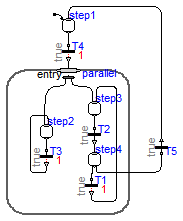
model UnsafeParallel1 "Wrong Modelica_StateGraph2 that branches out of the parallel step (gives error during initialization)" extends Modelica.Icons.Example;Parallel parallel( nIn=1, nEntry=2, nOut=0, use_outPort=false, use_inPort=true); Modelica_StateGraph2.Step step2( nIn=2, nOut=1); Modelica_StateGraph2.Step step3( nOut=1, nIn=2, initialStep=false); Modelica_StateGraph2.Transition T2( waitTime=1, delayedTransition= false); Modelica_StateGraph2.Step step4( nOut=2, nIn=1); Modelica_StateGraph2.Transition T1( delayedTransition=true, waitTime=1); Modelica_StateGraph2.Transition T3( delayedTransition=true, waitTime=1); Modelica_StateGraph2.Step step1( nOut=1, nIn=1, initialStep=true); Modelica_StateGraph2.Transition T4( delayedTransition=true, waitTime=1); Modelica_StateGraph2.Transition T5( waitTime=1, delayedTransition= false); equationconnect(step3.outPort[1], T2.inPort); connect(parallel.entry[1], step2.inPort[1]); connect(parallel.entry[2], step3.inPort[1]); connect(T2.outPort, step4.inPort[1]); connect(step4.outPort[1], T1.inPort); connect(T1.outPort, step3.inPort[2]); connect(T3.outPort, step2.inPort[2]); connect(step2.outPort[1], T3.inPort); connect(T4.outPort, parallel.inPort[1]); connect(step1.outPort[1], T4.inPort); connect(step4.outPort[2], T5.inPort); connect(T5.outPort, step1.inPort[1]); end UnsafeParallel1;
Modelica_StateGraph2.Examples.WrongStateGraphs.UnsafeParallel2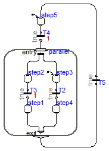
model UnsafeParallel2 "Wrong Modelica_StateGraph2 where not all parallel paths are synchronized (gives translation error)" extends Modelica.Icons.Example;Parallel parallel( nIn=1, nEntry=2, nOut=1, use_inPort=true, use_outPort=true, nExit=2); Modelica_StateGraph2.Step step2( nIn=1, nOut=1); Modelica_StateGraph2.Step step3( nOut=1, nIn=1, initialStep=true); Modelica_StateGraph2.Transition T2( waitTime=1, delayedTransition= false); Modelica_StateGraph2.Step step4( nOut=1, nIn=1); Modelica_StateGraph2.Transition T3( delayedTransition=true, waitTime=1); Modelica_StateGraph2.Step step1( nIn=1, nOut=1); Modelica_StateGraph2.Step step5( nIn=1, nOut=1, initialStep=true); Modelica_StateGraph2.Transition T4( delayedTransition=true, waitTime=1); Modelica_StateGraph2.Transition T5( waitTime=1, delayedTransition= false); equationconnect(step3.outPort[1], T2.inPort); connect(T2.outPort, step4.inPort[1]); connect(step2.outPort[1], T3.inPort); connect(T3.outPort, step1.inPort[1]); connect(T4.outPort, parallel.inPort[1]); connect(step5.outPort[1], T4.inPort); connect(parallel.outPort[1], T5.inPort); connect(T5.outPort, step5.inPort[1]); connect(parallel.entry[1], step2.inPort[1]); connect(parallel.entry[2], step3.inPort[1]); connect(step1.outPort[1], parallel.exit[1]); connect(step4.outPort[1], parallel.exit[2]); end UnsafeParallel2;
Modelica_StateGraph2.Examples.WrongStateGraphs.UnsafeParallel3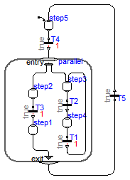
model UnsafeParallel3 "Wrong Modelica_StateGraph2 where not all parallel paths are synchronized (gives translation error)" extends Modelica.Icons.Example;Parallel parallel( nIn=1, nEntry=2, nOut=1, use_inPort=true, use_outPort=true, nExit=1); Modelica_StateGraph2.Step step2( nIn=1, nOut=1); Modelica_StateGraph2.Step step3( nOut=1, nIn=2, initialStep=false); Modelica_StateGraph2.Transition T2( waitTime=1, delayedTransition= false); Modelica_StateGraph2.Step step4( nOut=1, nIn=1); Modelica_StateGraph2.Transition T1( delayedTransition=true, waitTime=1); Modelica_StateGraph2.Transition T3( delayedTransition=true, waitTime=1); Modelica_StateGraph2.Step step1( nIn=1, nOut=1); Modelica_StateGraph2.Step step5( nIn=1, nOut=1, initialStep=true); Modelica_StateGraph2.Transition T4( delayedTransition=true, waitTime=1); Modelica_StateGraph2.Transition T5( waitTime=1, delayedTransition= false); equationconnect(step3.outPort[1], T2.inPort); connect(T2.outPort, step4.inPort[1]); connect(step4.outPort[1], T1.inPort); connect(step2.outPort[1], T3.inPort); connect(T3.outPort, step1.inPort[1]); connect(T4.outPort, parallel.inPort[1]); connect(step5.outPort[1], T4.inPort); connect(parallel.outPort[1], T5.inPort); connect(T5.outPort, step5.inPort[1]); connect(parallel.entry[1], step2.inPort[1]); connect(parallel.entry[2], step3.inPort[1]); connect(T1.outPort, step3.inPort[2]); connect(step1.outPort[1], parallel.exit[1]); end UnsafeParallel3;
Modelica_StateGraph2.Examples.WrongStateGraphs.UnsafeParallel4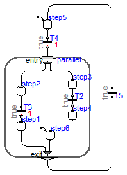
model UnsafeParallel4 "Wrong Modelica_StateGraph2 where not all parallel paths are synchronized and a wrong initial step is added to compensate for this (gives an error during initialization)" extends Modelica.Icons.Example;Parallel parallel( nIn=1, nEntry=2, nOut=1, use_inPort=true, use_outPort=true, nExit=2); Modelica_StateGraph2.Step step2( nIn=1, nOut=1); Modelica_StateGraph2.Step step3( nOut=1, nIn=1, initialStep=false); Modelica_StateGraph2.Transition T2( waitTime=1, delayedTransition= false); Modelica_StateGraph2.Step step4( nOut=0, nIn=1); Modelica_StateGraph2.Transition T3( delayedTransition=true, waitTime=1); Modelica_StateGraph2.Step step1( nIn=1, nOut=1); Modelica_StateGraph2.Step step5( nIn=1, nOut=1, initialStep=true); Modelica_StateGraph2.Transition T4( delayedTransition=true, waitTime=1); Modelica_StateGraph2.Transition T5( waitTime=1, delayedTransition= false); Modelica_StateGraph2.Step step6( nOut=1, initialStep=true); equationconnect(step3.outPort[1], T2.inPort); connect(T2.outPort, step4.inPort[1]); connect(step2.outPort[1], T3.inPort); connect(T3.outPort, step1.inPort[1]); connect(T4.outPort, parallel.inPort[1]); connect(step5.outPort[1], T4.inPort); connect(parallel.outPort[1], T5.inPort); connect(T5.outPort, step5.inPort[1]); connect(parallel.entry[1], step2.inPort[1]); connect(parallel.entry[2], step3.inPort[1]); connect(step1.outPort[1], parallel.exit[1]); connect(step6.outPort[1], parallel.exit[2]); end UnsafeParallel4;
Modelica_StateGraph2.Examples.WrongStateGraphs.UnsafeParallel5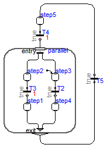
model UnsafeParallel5 "Wrong Modelica_StateGraph2 where an initial step is placed in a parallel (gives translation error)" extends Modelica.Icons.Example;Parallel parallel( nIn=1, nEntry=2, nOut=1, use_inPort=true, use_outPort=true, nExit=2); Modelica_StateGraph2.Step step2( nIn=1, nOut=1); Modelica_StateGraph2.Step step3( nOut=1, nIn=1, initialStep=true); Modelica_StateGraph2.Transition T2( waitTime=1, delayedTransition= false); Modelica_StateGraph2.Step step4( nOut=1, nIn=1); Modelica_StateGraph2.Transition T3( delayedTransition=true, waitTime=1); Modelica_StateGraph2.Step step1( nIn=1, nOut=1); Modelica_StateGraph2.Step step5( nIn=1, nOut=1, initialStep=false); Modelica_StateGraph2.Transition T4( delayedTransition=true, waitTime=1); Modelica_StateGraph2.Transition T5( waitTime=1, delayedTransition= false); equationconnect(step3.outPort[1], T2.inPort); connect(T2.outPort, step4.inPort[1]); connect(step2.outPort[1], T3.inPort); connect(T3.outPort, step1.inPort[1]); connect(T4.outPort, parallel.inPort[1]); connect(step5.outPort[1], T4.inPort); connect(parallel.outPort[1], T5.inPort); connect(T5.outPort, step5.inPort[1]); connect(parallel.entry[1], step2.inPort[1]); connect(parallel.entry[2], step3.inPort[1]); connect(step1.outPort[1], parallel.exit[1]); connect(step4.outPort[1], parallel.exit[2]); end UnsafeParallel5;
Modelica_StateGraph2.Examples.WrongStateGraphs.NoUnaryConnection1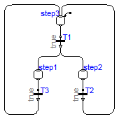
model NoUnaryConnection1 "Two steps are wrongly connected to the same outPort of a transition" extends Modelica.Icons.Example;Modelica_StateGraph2.Transition T1; Modelica_StateGraph2.Step step1( nIn=1, nOut=1); Modelica_StateGraph2.Step step2( nIn=1, nOut=1); Modelica_StateGraph2.Step step3( nIn=2, nOut=1, initialStep=true); Modelica_StateGraph2.Transition T2; Modelica_StateGraph2.Transition T3; equationconnect(T1.outPort, step1.inPort[1]); connect(T1.outPort, step2.inPort[1]); connect(step3.outPort[1], T1.inPort); connect(step2.outPort[1], T2.inPort); connect(T2.outPort, step3.inPort[1]); connect(step1.outPort[1], T3.inPort); connect(T3.outPort, step3.inPort[2]); end NoUnaryConnection1;
Modelica_StateGraph2.Examples.WrongStateGraphs.NoUnaryConnection2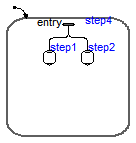
model NoUnaryConnection2 "Two steps are wrongly connected to one element of an entry port" extends Modelica.Icons.Example;Parallel step4( nIn=0, use_inPort=false, nEntry=1, initialStep=true); Modelica_StateGraph2.Step step1( nIn=1); Modelica_StateGraph2.Step step2( nIn=1); equationconnect(step4.entry[1], step1.inPort[1]); connect(step4.entry[1], step2.inPort[1]); end NoUnaryConnection2;